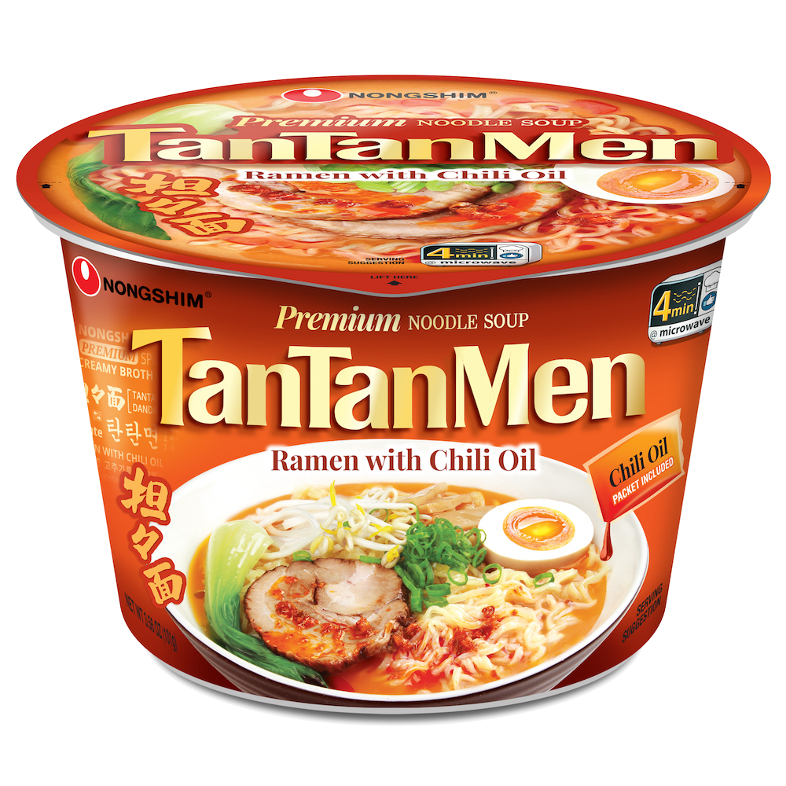
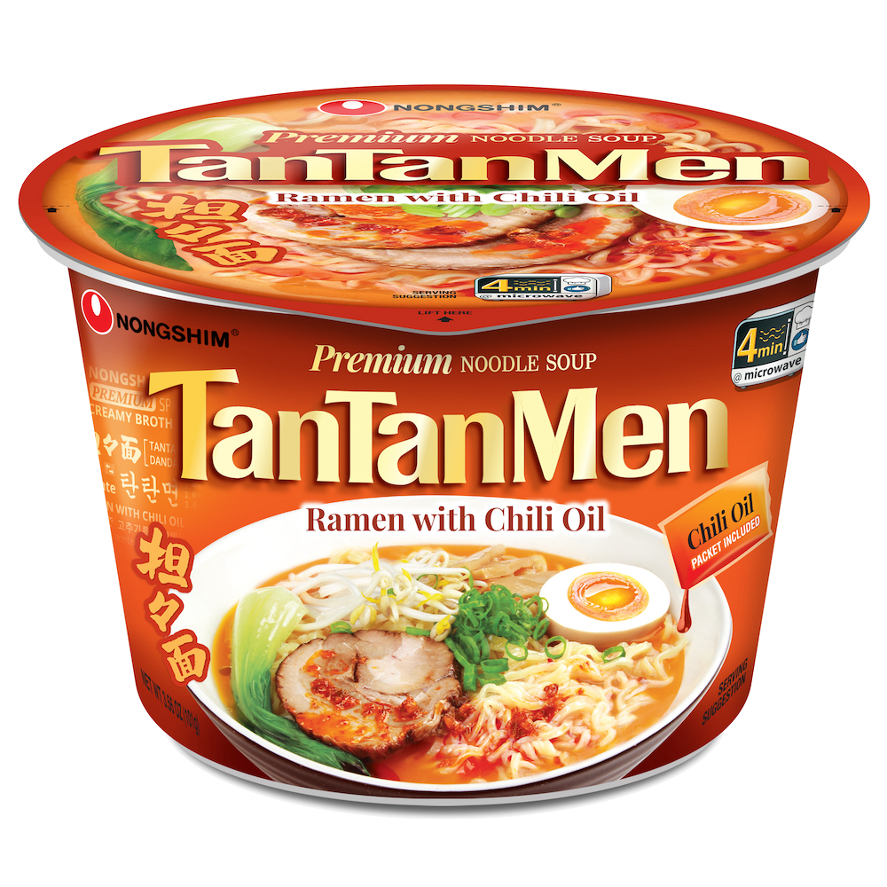

Ansungtangmyun
Weight: 125g
Year of Release: 1983
Rating: 4.5/5
Notable flavors: beef broth, seaweed, mushrooms, soybean paste, chili powder
This product is pretty notable due to the beef and mushroom flavors. It's basically Shin Ramyun but with an enhanced beef flavor (comparable to Shin Black). It's also a little less spicy than Shin Ramyun, but still retains the flavor of the original. Recommended for people who want to try out different ramyun flavors or want a more meaty version of their favorite Nongshim products.


 
